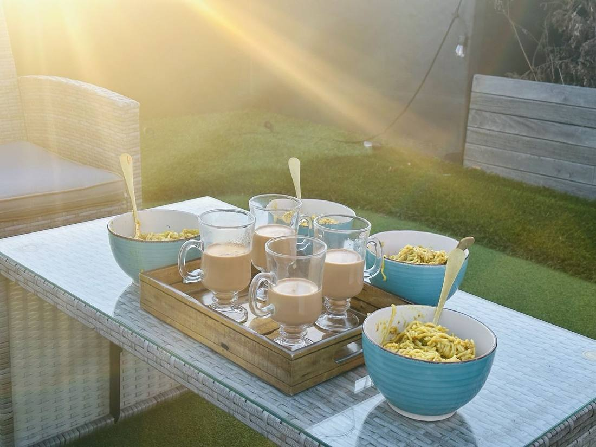
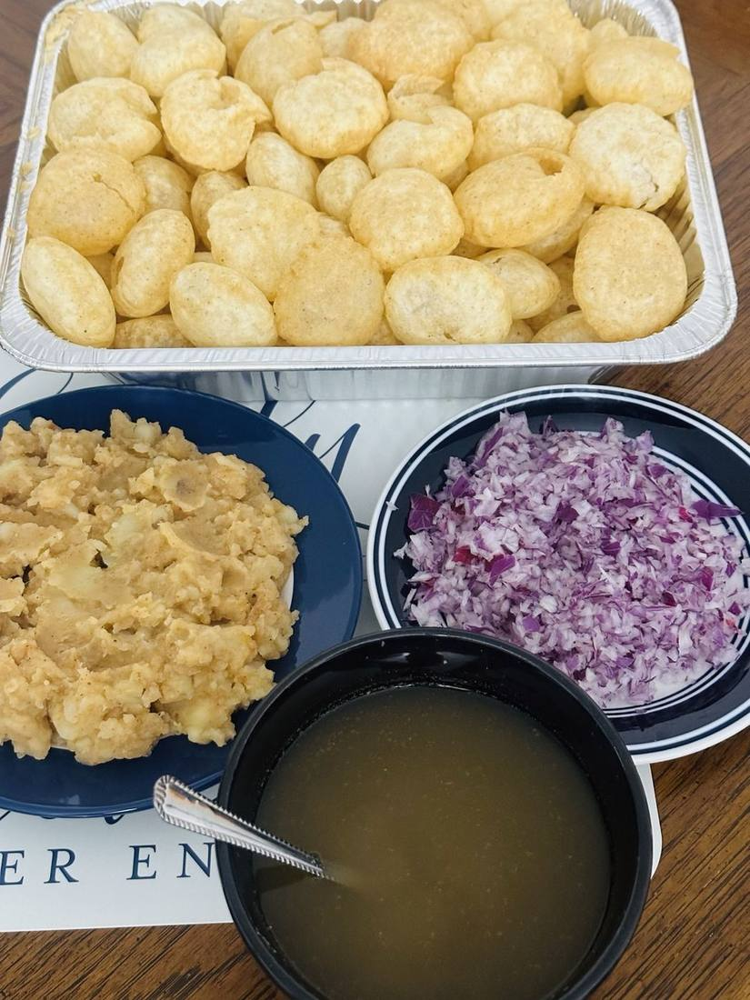
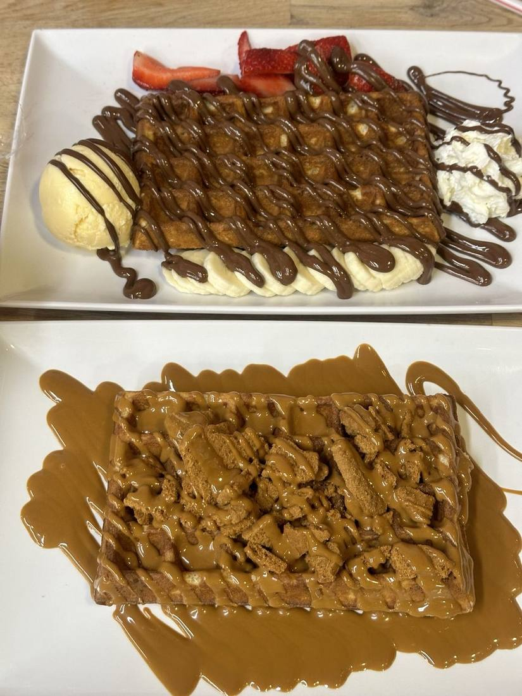
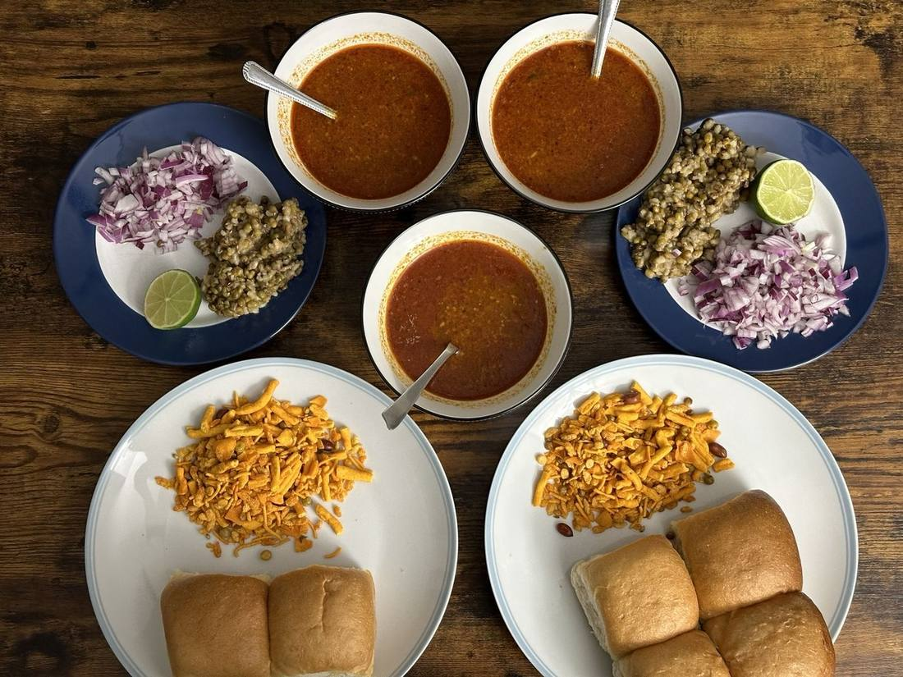
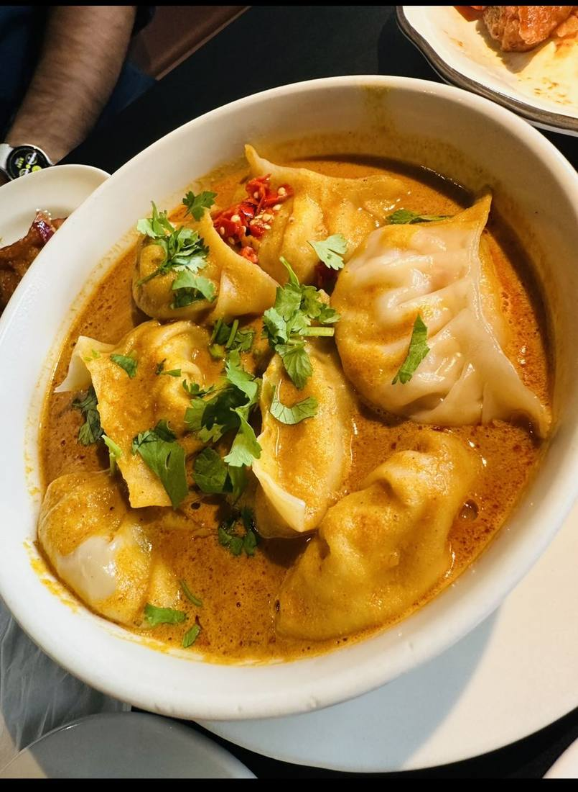
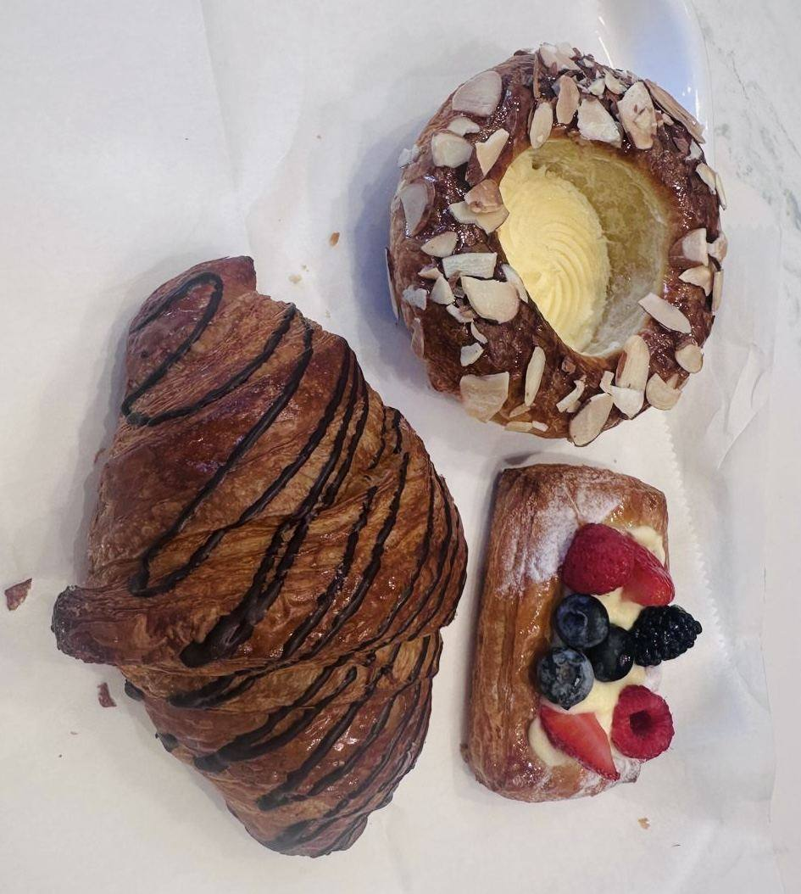
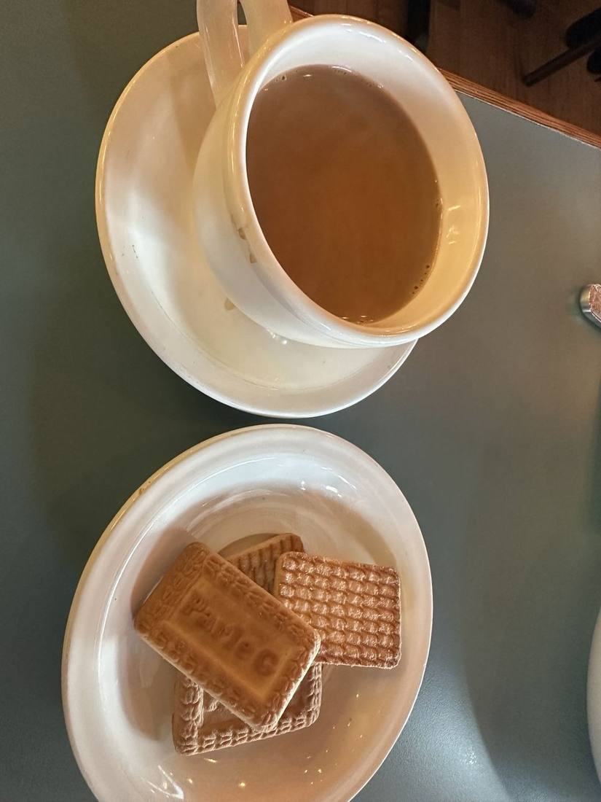
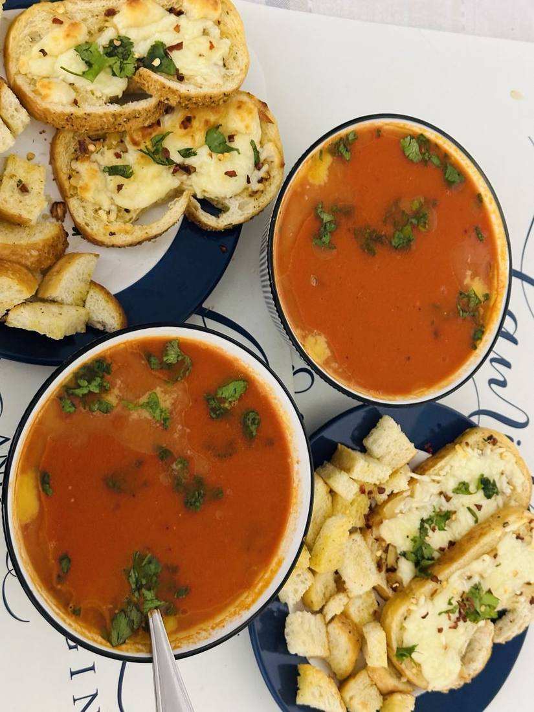
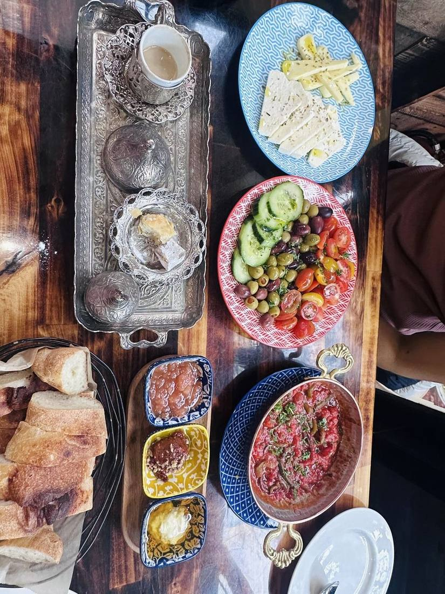
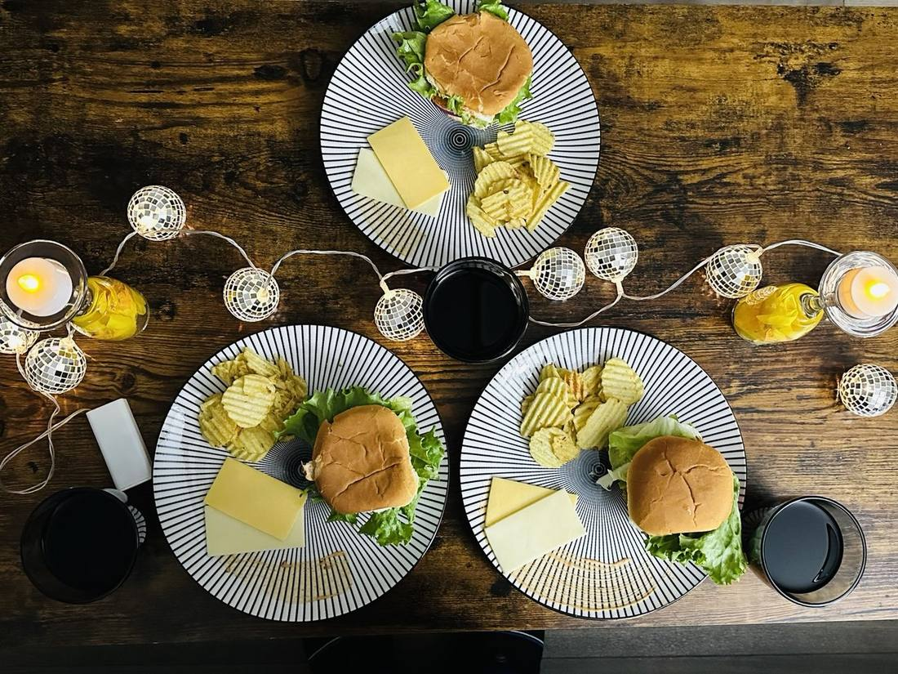

Chai & comfort
Not a food blog. Just the meals, chai stops, home experiments and comfort food that were genuinely worth remembering.
A highly selective archive. The only serious criterion: would I happily have it again?







Chai + biscuits
Soup weather
Shared table
Styled dinner“The best food recommendations are not optimized for virality. They are optimized for the second visit.”
Worth the CaloriesSwap the plate for the camera.
In Front of the Lens →Back to ProductFlix